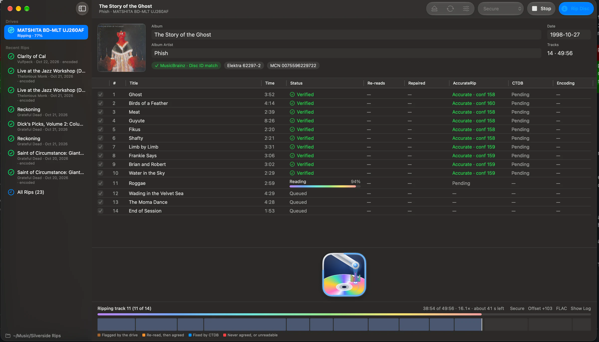
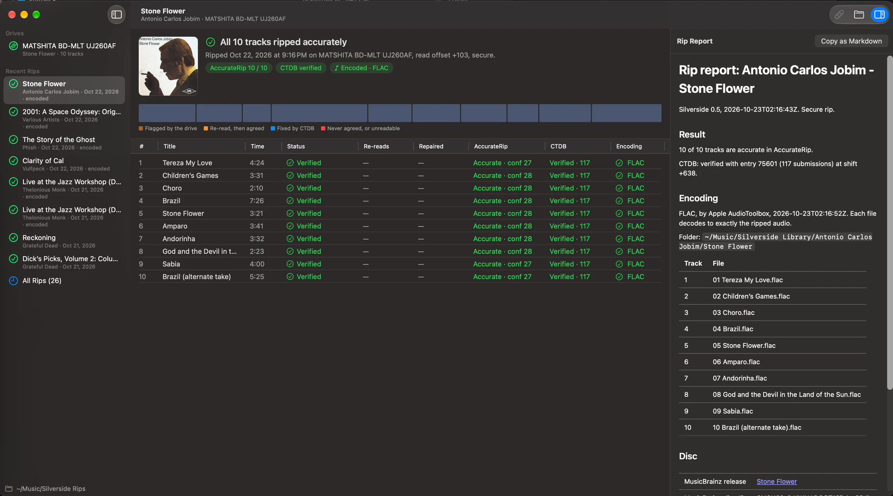
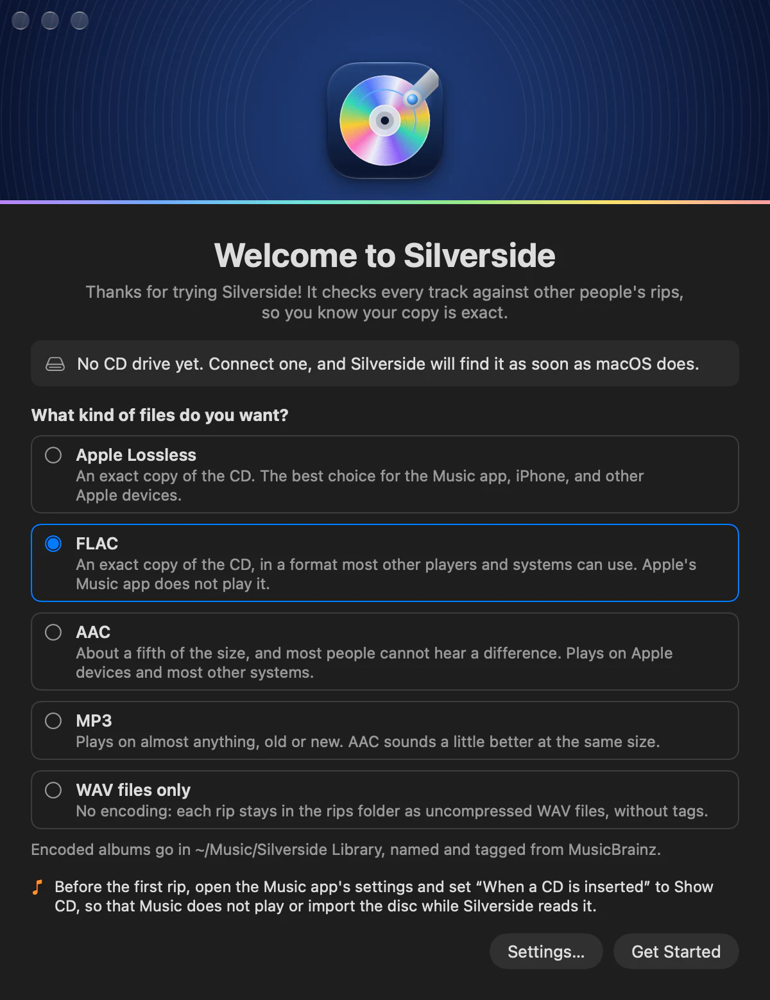

01
Read
Every sector is read with your drive's read offset corrected. Anything that doesn't agree, or that the drive flags, is read again until it does.
Silverside checks every track against other people's rips, so you know your copy is exact. Then it names, tags, and encodes the album for your library.
Version 0.5 · Free and open source · macOS 15 or later · Apple silicon and Intel

A green check in Silverside means something: your audio matched rips made by other people, on other drives, from the same disc.
Every sector is read with your drive's read offset corrected. Anything that doesn't agree, or that the drive flags, is read again until it does.
Each track is checked against AccurateRip and the CUETools database. Where CTDB has repair data, damaged sectors are fixed and checked again.
Tracks are named and tagged from MusicBrainz, given cover art, and encoded. A lossless file must decode to exactly the ripped audio.
The map fills in as Silverside reads. Clean stretches stay quiet. Anything the drive struggled with is marked, so a bad disc never hides behind a green check.

AccurateRip confidence for each track, the CTDB entry it matched, the disc IDs, your drive and its read offset, the encoder, and every file it wrote. It's Markdown to read and JSON to keep, with a CUE sheet to burn the disc again exactly.
Apple Lossless for the Music app, FLAC for everything else, AAC or MP3 when space matters, or plain WAV files with the report. Albums land in your library folder, named and tagged, with the cover embedded.

Scratched discs, box sets, bootlegs with a hidden track, and the drive you happen to own.
Sectors that read differently, that the drive flags, or that cannot be read at all are re-read until they agree. What is still wrong, CTDB repairs. Rip a stubborn disc again in another drive, and Silverside pools both rips.
The read offset comes from AccurateRip's list of drives and is confirmed by your own rips. Silverside measures the drive's cache too, so a re-read is a real read, not a copy from memory.
Each drive rips on its own, so several discs can rip at the same time. The discs of a box set share one release choice and one set of edits.
Edit the album, artist, date, and track titles before the rip. The files are named and tagged with your edits, and what MusicBrainz said stays in the report. A disc MusicBrainz does not know is named from its CD-Text, or by you.
A song hidden before track 1 is ripped and encoded as track 0. Pregaps, ISRCs, the MCN, and CD-Text go into the report and the CUE sheet.
silverside rips, repairs, encodes, and looks up metadata from a terminal, with the same engine and the same settings as the app.
Music never tells you whether your copy matches anyone else's. Silverside checks every track against AccurateRip and CTDB and shows you the result, and it re-reads and repairs what a plain import would copy wrong.
The names come from MusicBrainz, where volunteers keep album and track data consistent and accurate, rather than from the Gracenote data Music uses. And Music cannot write FLAC.
A shared database of checksums from other people's rips. When your track matches, the confidence number tells you how many rips agree with yours. The CUETools database does the same for whole discs, and keeps the data that repairs a damaged rip.
Any drive that macOS sees as a CD drive: USB, Thunderbolt, or a SATA drive in an enclosure. No Mac that runs macOS 15 came with a built-in drive, so in practice it is external.
Often, yes. A damaged track takes longer: the status line shows each read, the sectors with errors, and the rounds of re-reads. Most damaged discs in testing came out fully accurate from one rip, after the CTDB repair. When too much of a disc is gone, the tracks that verify are marked verified, and the others are not.
Apple's audio frameworks cannot write MP3, so Silverside uses the free LAME encoder for it. Install it with brew install lame, and MP3 appears among the formats. Everything else is built in.
No account. To look up a disc, Silverside sends the disc's IDs to AccurateRip, CTDB, MusicBrainz, and the Cover Art Archive, and nothing else. See Privacy.
A Mac with macOS 15 Sequoia or later, Apple silicon or Intel, and a CD drive. And some CDs.
Nothing. Silverside is free, and its code is open source under the MIT License on GitHub. The name and the icon stay with the author.
A rip you can trust, a report that says why, and an album in your library. Free, and open source.
Download for MacVersion 0.5 · Free and open source · macOS 15 or later · Apple silicon and Intel